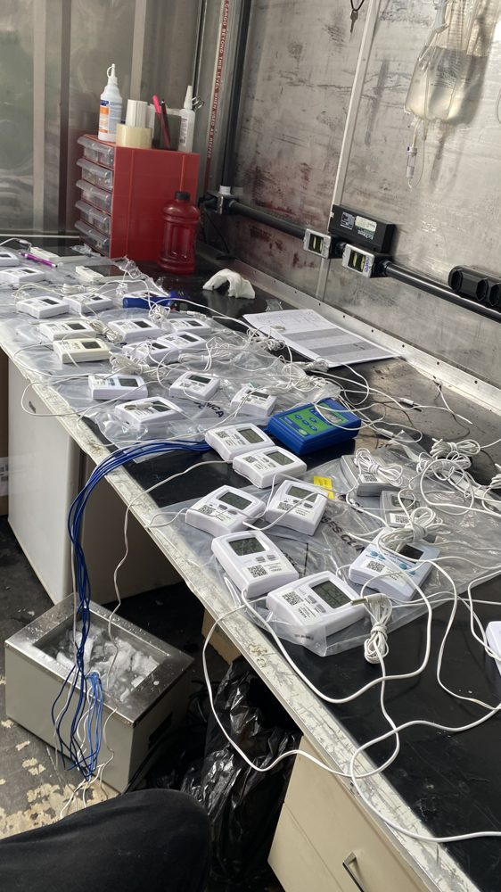

Calibração de Termômetros e Termohigrômetros
Garantimos a precisão e a rastreabilidade metrológica de seus equipamentos de medição de temperatura e umidade, essenciais para ambientes críticos.
- Certificados de calibração RBC (quando aplicável)
- Equipamentos de referência de alta exatidão
- Conformidade com normas e regulamentações